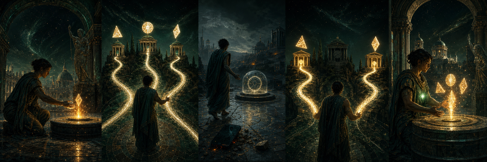

Educational purposes onlyIndependent executionEach authority runs its own Hara kernelRead how this simulation differs from a real ceremony
In a real ceremony, every authority has a separate Hara kernel that owns its local policy, evidence decision, chat state, and share-release decision. No authority can inspect another authority's kernel state.
JavaScript provides browser capabilities and carries WebRTC messages through IOC. Hara coordinates those capabilities and decides whether an authority may release its share. This guided page simulates the separate kernels together so the whole process is visible.
Custodia communis · shared guardianship
A key can be lost.
Identity can return.
Choose three authorities. Any two can help restore the identity alongside its credential-vault factor.

Claves tuae
Your keys and shares
This demonstrator exposes all values to teach the ceremony. Production software must not render secret material.
Colloquium privatum